HARDWARE PROTOTYPING 101
In my time at Olin, I discovered the method most impactful to my growth was rapidly prototyping to forces fast iterative learning.
In Fall 2016 under Mel Chua's counsel, I conducted an independent study in comics, the art of visually conveying information. For my final deliverable, I chose to elaborate on the prototyping guidelines I have come to develop for myself.
HERE is the piece, unannotated.
Below is my work, annotated with process commentary. Click on each panel to show commentary.
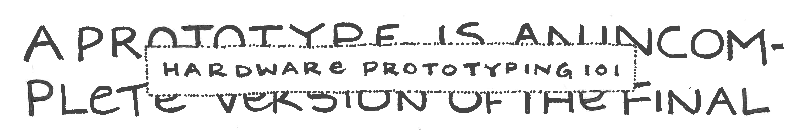
Despite the title, the frameworks in this guide are general enough to apply to software development.
For the final piece, I used a 0.7mm black gel pen. Previous revisions: first, rudimentary ballpoint work; then, pencil work that I rearrange with scissors and tape. The "building block" aspect of the scissors and tape allowed me to explore layouts that I otherwise would not have.
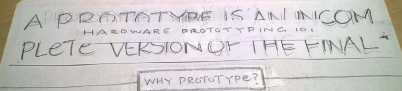
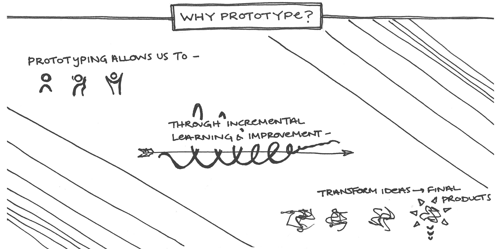
This introductory panel was the most challenging for me, in terms of determining the content and its presentation. I wanted to introduce the reader to the importance of prototyping, and tie that back into the various concepts that Oliners are familiar with.
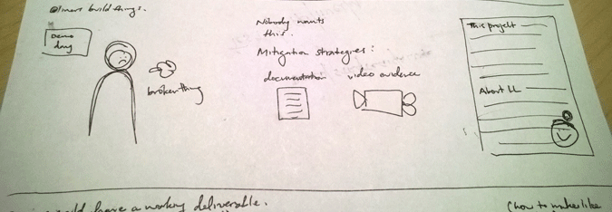
But, this was the last panel I created. By the time I reached it, I realized that cramming too much content, especially since the page was already visually crowded, would render my key points unimportant. Hence, all the whitespace.
Though I had minimal content, layout was tricky. I had several false starts and discovered the beauty of gluesticks:
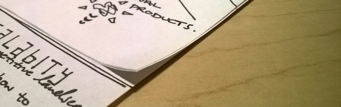
Finally, the inspirations behind this panel's visuals: spiral learning and refinement (image search "final product").
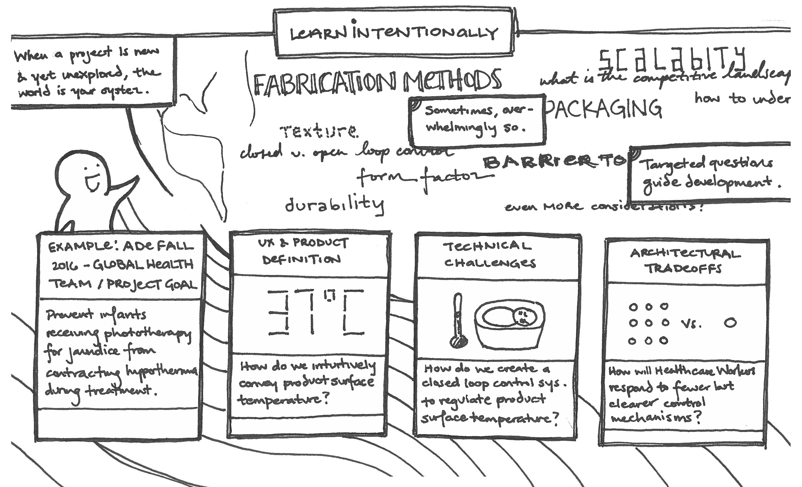
Much of the general organization of this work's content is drawn from an alumni talk I attended on hardware prototyping. However, I knew I wanted to use at least one of my prior projects as an example from the get-go.
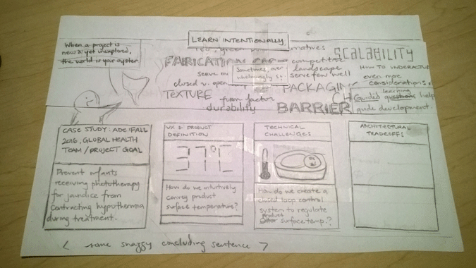
I decided on my senior capstone (link coming!) precisely because my team had spent so much time exploring, and exploring in almost an aimless fashion. My idea to place my simple info. panel on top of the crowded word cloud comes underscores the importance of finding clarity in complexity.
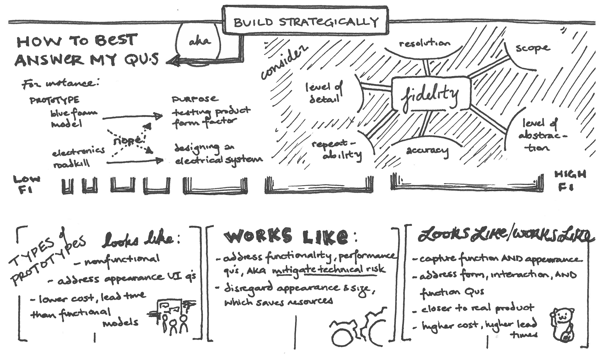
My low-fi/high-fi bar is born of a number of iterations. I worked with a two-axis table and a line scale, struggling to find examples to put in each. (The pitchfork-esque in the line scale is my prosthetic arm project.) After working unsuccessfully with these frameworks, I realized the addition of examples did not add any new insights and ditched them in favor of a bar scale. The bar scale successfully conveys time and effort in relation to fidelity level.
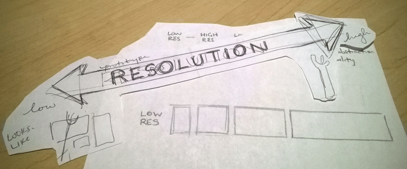
If I were to redo this panel, I would replace the fidelty web with a list, allowing me to expand and develop this panel's top-left section.
And, if you haven't realized already: The icon for looks-likes/works-like is the Chinese fortune cat! Just like cats in real life.
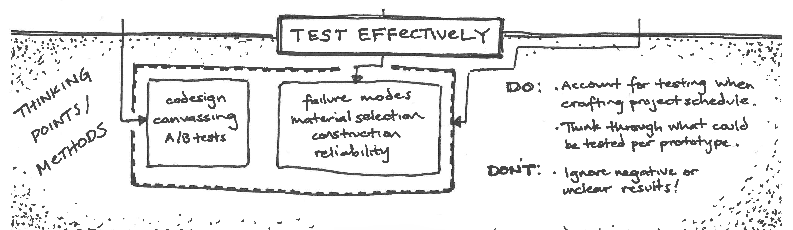
While laying out each panel, I struggled with the text to image ratio. Because I was unable to think of cohesive imagery for this panel's content, I focused on creative ways of indicating hierarchy while maintaining the this piece's rectangle theme.
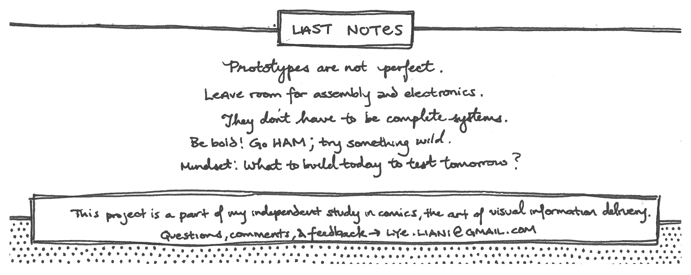
I intentionally gave this panel a lot of whitespace to keep readers' attention on the content. The whitespace is especially effective since it is sandwiched between panels with dotted backgrounds. I hope to never again make these dots manually, especially the last set.